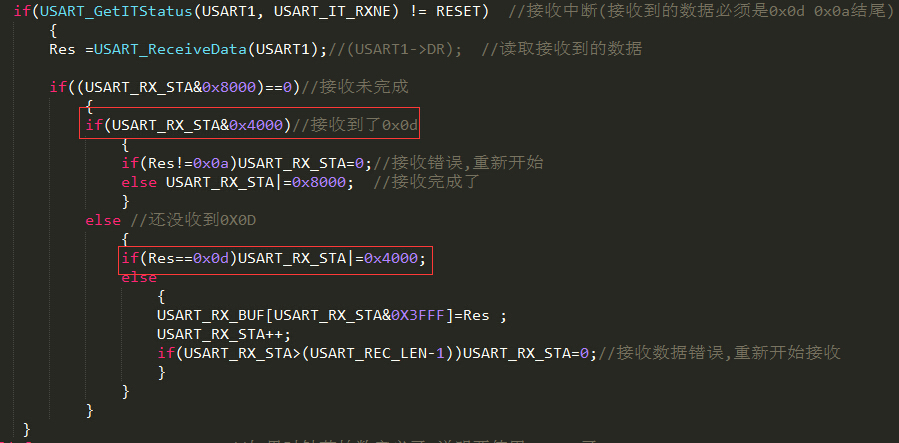
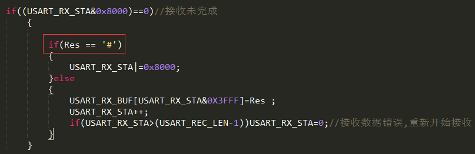

很久前准备做小车的时候买了个蓝牙模块，一直没有用过，现在准备竞赛在学习STM32，为了练手就捣弄下这块模块了，HC06蓝牙模块。
经过
第一次用模块，这次搞懂了很多事情。
蓝牙模块是快一年前舍友买的，也没有DATASHEET，去淘宝查了这个型号的模块，详情里面下载了一些资料。
一般这种模块都有AT命令，就是发送一个指定指令能返回一些系统信息。
用的STM32开发板是通过串口下载程序的，把串口的两根线引出来直接接蓝牙模块，感觉应该可以调试的。
有一个命令为发送AT返回OK，电脑连蓝牙模块发送AT完全没反应。然后就以为开发板的USB串口不能和他连接，其实是可以的！
然后开发板串口连接蓝牙，发送AT返回值现实在屏幕上，还是不行。
继续测试，手机连接蓝牙，蓝牙通过USB转串口连接电脑，这时候串口调试助手可以正常收发，与手机上的蓝牙串口调试助手可以正常通信。
然后测试，手机连接蓝牙，蓝牙连接开发板，手机端能接受但发送的数据开发板收不到，后边测试直接把开发板的RX与TX相连，发现之前通过手机发送的数据都涌出来了，莫非蓝牙串口通信发送数据的时候结束符号\r\n有问题？
然后仔细研究USART通信方式和如何判断结束，发现问题在于开发板检测蓝牙发送信息时无法检测到0X0A和0X0D。
总结&解决方案
通过这次经历，搞清楚了几件事：
开发板的USB转串口一样可以外接其他串口，比如蓝牙串口模块，WIFI串口模块，一开始真不知道。
蓝牙串口模块相当于一个中转站，手机和蓝牙通过蓝牙协议通信，蓝牙把收到的手机发来的信息通过串口通信的方式发送给开发板；开发板和蓝牙通过串口协议通信，把开发板发送来的信息通过蓝牙协议发送到手机。对于开发者来说就不需要关心蓝牙协议了，只要会串口就OK了，还是很方便的。
这块坑爹的蓝牙模块出牌不按套路，发送AT（手机未连接蓝牙的情况下是AT命令模式）应该返回OK，可是不能用！经过测试只有改蓝牙名的AT命令可以使用！
手机->蓝牙->开发板通信的解决方案：
首先看下正常情况下的代码，如下

红色标记处是判断0X0A与0X0D的过程。但是他不按规矩出牌！那我们也没必要和他认真喽！
如下图，通过手动结束符的方式实现正常通信。

如果最后一个字符是#，那么接收完了。手机发送信息的时候以#结束便可以解决这个问题了！当然，正常数据记得避开#或者如果冲突考虑选择其他结束符号。
AND.
然后写了一个手机通过蓝牙控制开发板几个LED亮灭的程序，假如做成一个弱点控制强电的模块，去控制家里面的台灯或者插座或者神马的开关不就是是智能家具了嘛 - -。不过换做WIFI模块会更好！
电信专业还是很有趣的！平常学的知识可能会很无聊，不过总会用上的嘛！
END.